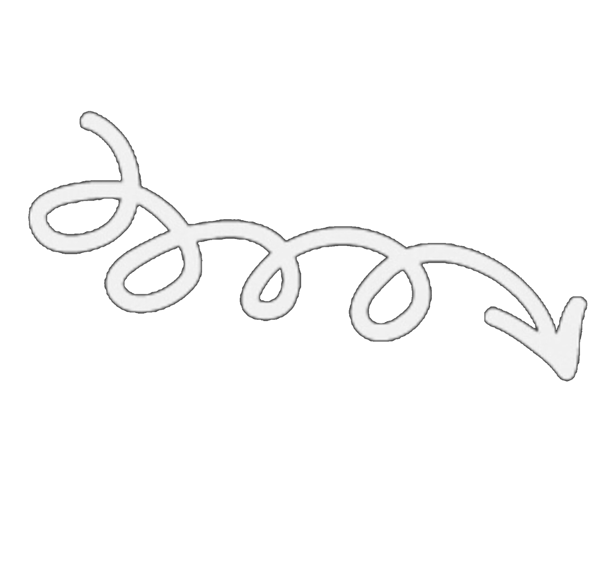

- Csoportosítsa a nyomtatókat működési elv szerint!
- Mutassa be a nyomtatók csatlakozási lehetőségit!
- Mutassa be a lézernyomtató működési elvét!

ütő vagy nem ütő; karakter-, sor- vagy lapnyomtató
közvetlenül (párhuzamos port, USB), hálózaton keresztül (például: vezetékesen, vezeték nélkül, nyomtató szerveren keresztül megosztva)